Split GPG
警告
The implementation has been updated to provide more features in Split GPG-2.
Split GPG implements a concept similar to having a smart card with your private GPG keys, except that the role of the “smart card” is played by another Qubes app qube. This way one not-so-trusted domain, e.g. the one where Thunderbird is running, can delegate all crypto operations – such as encryption/decryption and signing – to another, more trusted, network-isolated domain. This way the compromise of your domain where Thunderbird or another client app is running – arguably a not-so-unthinkable scenario – does not allow the attacker to automatically also steal all your keys. (We should make a rather obvious comment here that the so-often-used passphrases on private keys are pretty meaningless because the attacker can easily set up a simple backdoor which would wait until the user enters the passphrase and steal the key then.)

This diagram presents an overview of the Split GPG architecture.
Advantages of Split GPG vs. traditional GPG with a smart card
It is often thought that the use of smart cards for private key storage guarantees ultimate safety. While this might be true (unless the attacker can find a usually-very-expensive-and-requiring-physical-presence way to extract the key from the smart card) but only with regards to the safety of the private key itself. However, there is usually nothing that could stop the attacker from requesting the smart card to perform decryption of all the user documents the attacker has found or need to decrypt. In other words, while protecting the user’s private key is an important task, we should not forget that ultimately it is the user data that are to be protected and that the smart card chip has no way of knowing the requests to decrypt documents are now coming from the attacker’s script and not from the user sitting in front of the monitor. (Similarly the smart card doesn’t make the process of digitally signing a document or a transaction in any way more secure – the user cannot know what the chip is really signing. Unfortunately this problem of signing reliability is not solvable by Split GPG.)
With Qubes Split GPG this problem is drastically minimized, because each time the key is to be used the user is asked for consent (with a definable time out, 5 minutes by default), plus is always notified each time the key is used via a tray notification from the domain where GPG backend is running. This way it would be easy to spot unexpected requests to decrypt documents.
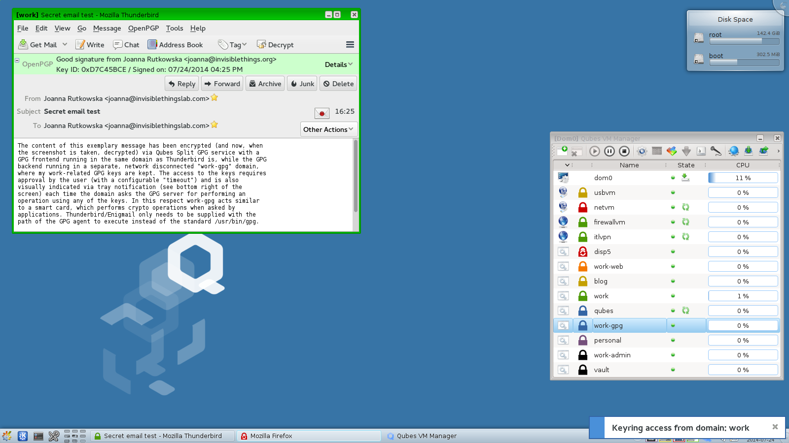
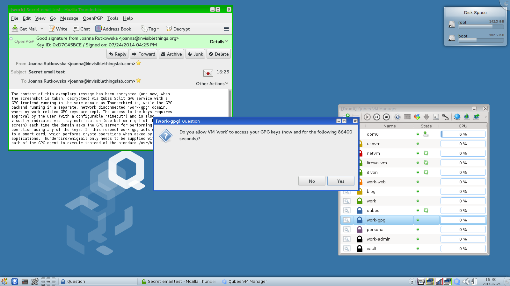
Configuring Split GPG
In dom0, make sure the qubes-gpg-split-dom0 package is installed.
[user@dom0 ~]$ sudo qubes-dom0-update qubes-gpg-split-dom0
Make sure you have the qubes-gpg-split package installed in the template you will use for the GPG domain.
For Debian or Whonix:
[user@debian-10 ~]$ sudo apt install qubes-gpg-split
For Fedora:
[user@fedora-32 ~]$ sudo dnf install qubes-gpg-split
Setting up the GPG backend domain
First, create a dedicated app qube for storing your keys (we will be calling it the GPG backend domain). It is recommended that this domain be network disconnected (set its netvm to none) and only used for this one purpose. In later examples this app qube is named work-gpg, but of course it might have any other name.
Make sure that gpg is installed there. At this stage you can add the private keys you want to store there, or you can now set up Split GPG and add the keys later. To check which private keys are in your GPG keyring, use:
[user@work-gpg ~]$ gpg -K
/home/user/.gnupg/secring.gpg
-----------------------------
sec 4096R/3F48CB21 2012-11-15
uid Qubes OS Security Team <security@qubes-os.org>
ssb 4096R/30498E2A 2012-11-15
(...)
This is pretty much all that is required. However, you might want to modify the default timeout: this tells the backend for how long the user’s approval for key access should be valid. (The default is 5 minutes.) You can change this via the QUBES_GPG_AUTOACCEPT environment variable. You can override it e.g. in ~/.profile:
[user@work-gpg ~]$ echo "export QUBES_GPG_AUTOACCEPT=86400" >> ~/.profile
Please note that previously, this parameter was set in ~/.bash_profile. This will no longer work. If you have the parameter set in ~/.bash_profile you must update your configuration.
Please be aware of the caveat regarding passphrase-protected keys in the Current limitations section.
Configuring the client apps to use Split GPG backend
Normally it should be enough to set the QUBES_GPG_DOMAIN to the GPG backend domain name and use qubes-gpg-client in place of gpg, e.g.:
[user@work-email ~]$ export QUBES_GPG_DOMAIN=work-gpg
[user@work-email ~]$ gpg -K
[user@work-email ~]$ qubes-gpg-client -K
/home/user/.gnupg/secring.gpg
-----------------------------
sec 4096R/3F48CB21 2012-11-15
uid Qubes OS Security Team <security@qubes-os.org>
ssb 4096R/30498E2A 2012-11-15
(...)
[user@work-email ~]$ qubes-gpg-client secret_message.txt.asc
(...)
Note that running normal gpg -K in the demo above shows no private keys stored in this app qube.
A note on gpg and gpg2:
Throughout this guide, we refer to gpg, but note that Split GPG uses gpg2 under the hood for compatibility with programs like Enigmail (which now supports only gpg2). If you encounter trouble while trying to set up Split GPG, make sure you’re using gpg2 for your configuration and testing, since keyring data may differ between the two installations.
Advanced Configuration
The qubes-gpg-client-wrapper script sets the QUBES_GPG_DOMAIN variable automatically based on the content of the file /rw/config/gpg-split-domain, which should be set to the name of the GPG backend VM. This file survives the app qube reboot, of course.
[user@work-email ~]$ sudo bash
[root@work-email ~]$ echo "work-gpg" > /rw/config/gpg-split-domain
Split GPG’s default qrexec policy requires the user to enter the name of the app qube containing GPG keys on each invocation. To improve usability for applications like Thunderbird with Enigmail, in dom0 place the following line at the top of the file /etc/qubes-rpc/policy/qubes.Gpg:
work-email work-gpg allow
where work-email is the Thunderbird + Enigmail app qube and work-gpg contains your GPG keys.
You may also edit the qrexec policy file for Split GPG in order to tell Qubes your default gpg vm (qrexec prompts will appear with the gpg vm preselected as the target, instead of the user needing to type a name in manually). To do this, append default_target=<vmname> to ask in /etc/qubes-rpc/policy/qubes.Gpg. For the examples given on this page:
@anyvm @anyvm ask default_target=work-gpg
Note that, because this makes it easier to accept Split GPG’s qrexec authorization prompts, it may decrease security if the user is not careful in reviewing presented prompts. This may also be inadvisable if there are multiple app qubes with Split GPG set up.
Using Thunderbird
Thunderbird 78 and higher
Starting with version 78, Thunderbird has a built-in PGP feature and no longer requires the Enigmail extension. For users coming from the Enigmail extension, the built-in functionality is more limited currently, including that public keys must live in your work-email qube with Thunderbird rather than your offline work-gpg qube.
In work-email, use the Thunderbird config editor (found at the bottom of preferences/options), and search for mail.openpgp.allow_external_gnupg. Switch the value to true. Still in config editor, search for mail.openpgp.alternative_gpg_path. Set its value to /usr/bin/qubes-gpg-client-wrapper. Restart Thunderbird after this change.
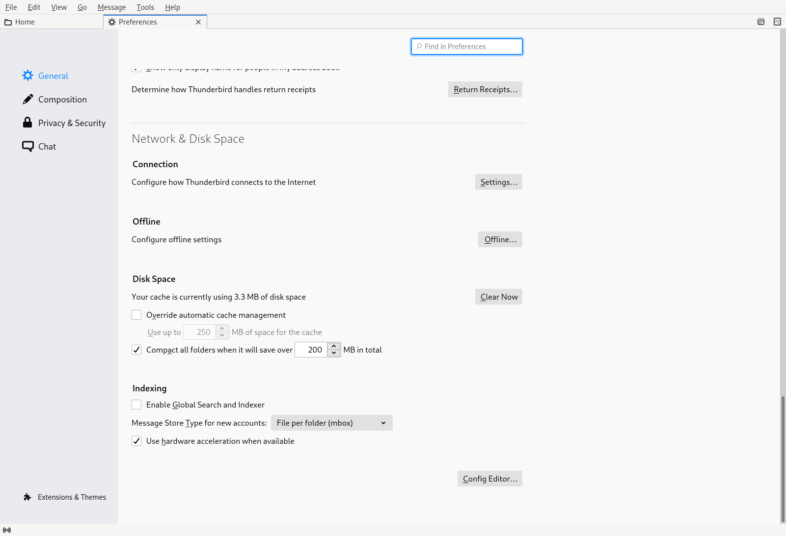
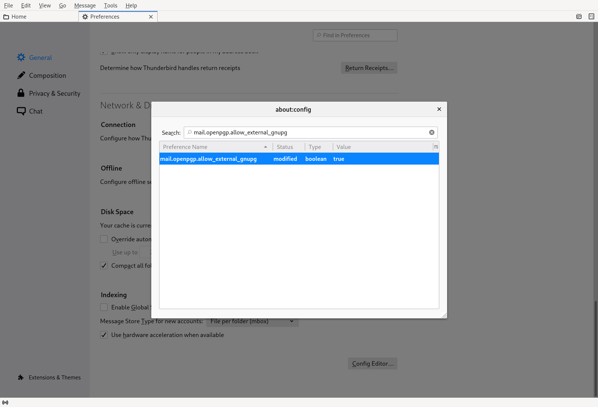
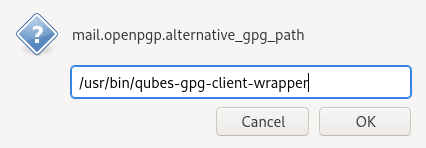
You need to obtain your key ID which should be exactly 16 characters. Enter the command qubes-gpg-client-wrapper -K --keyid-format long:
[user@work-email ~]$ qubes-gpg-client-wrapper -K --keyid-format long
/home/user/.gnupg/pubring.kbx
-----------------------------
sec rsa2048/777402E6D301615C 2020-09-05 [SC] [expires: 2022-09-05]
F7D2D4E922DFB7B2589AF3E9777402E6D301615C
uid [ultimate] Qubes test <user@localhost>
ssb rsa2048/370CE932085BA13B 2020-09-05 [E] [expires: 2022-09-05]
[user@work-email ~]$ qubes-gpg-client-wrapper --armor --export 777402E6D301615C > 777402E6D301615C.asc
Open the Account Settings and open the End-to-End Encryption tab of the respective email account. Click the Add Key button. You’ll be offered the choice Use your external key through GnuPG. Select it and click Continue.
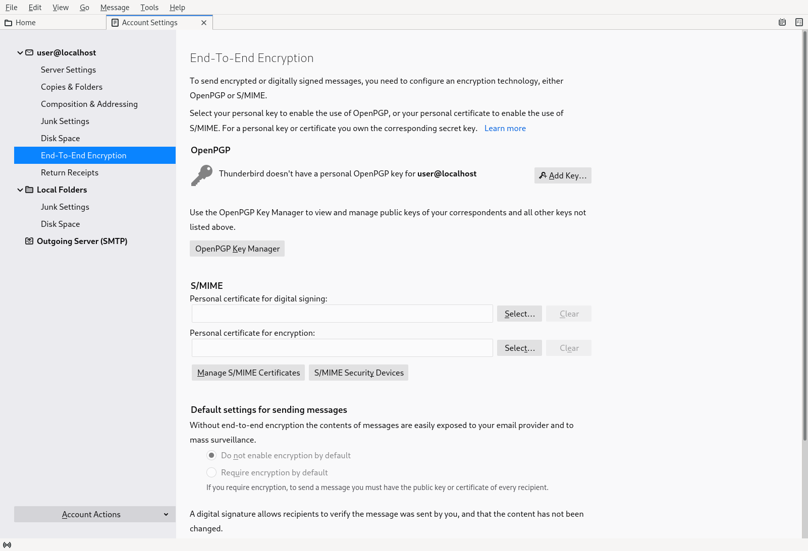
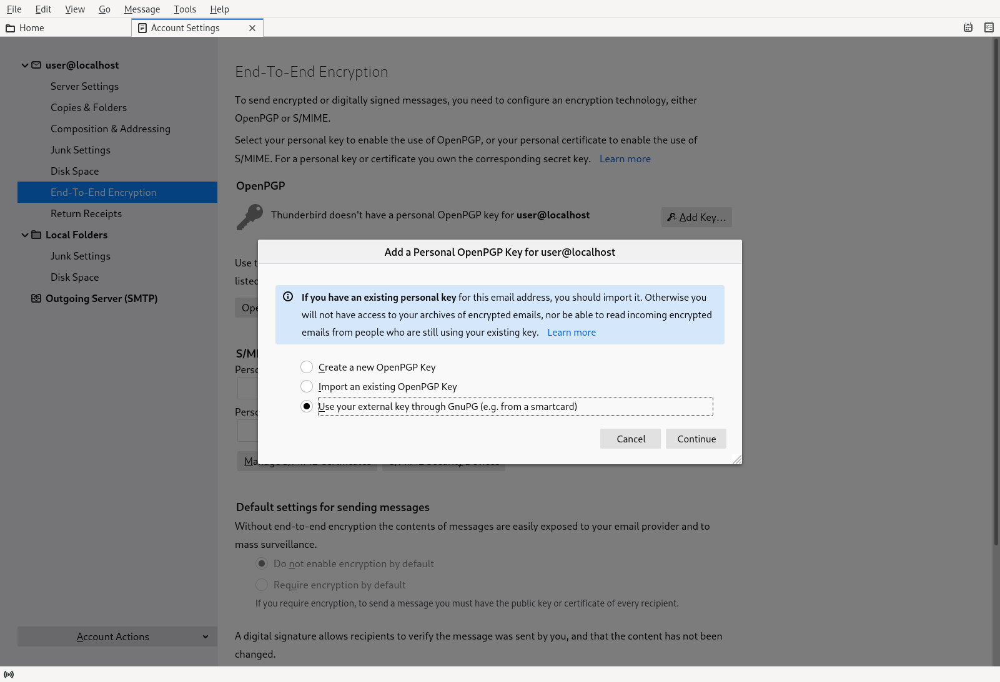
The key ID reference you would need here is 777402E6D301615C. Now paste or type the ID of the secret key that you would like to use. Be careful to enter it correctly, because your input isn’t verified. Confirm to save this key ID. Now you can select the key ID to use.
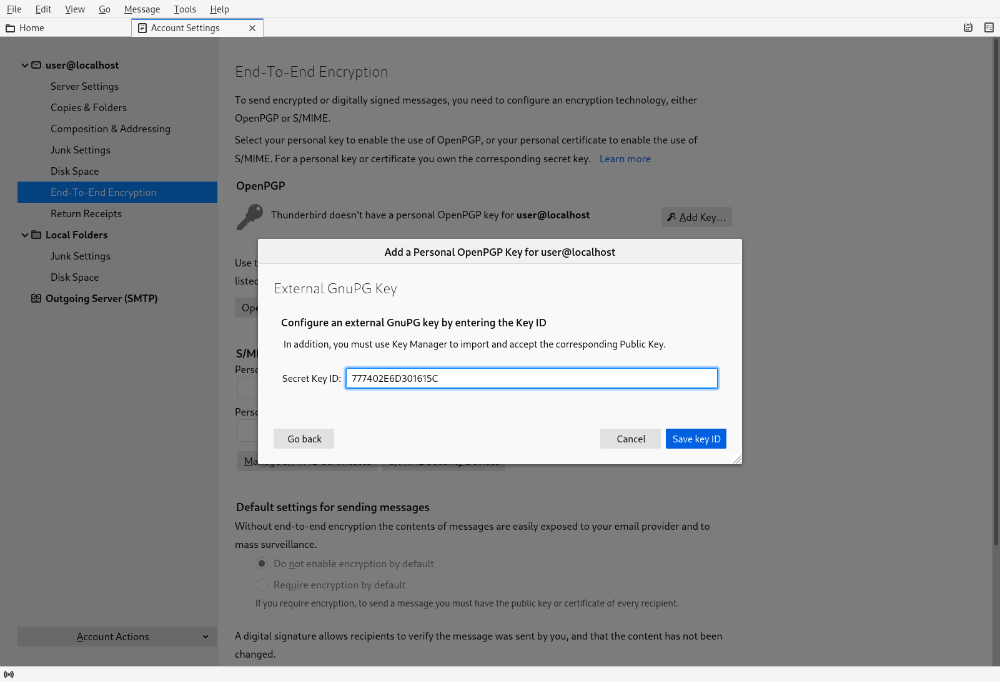
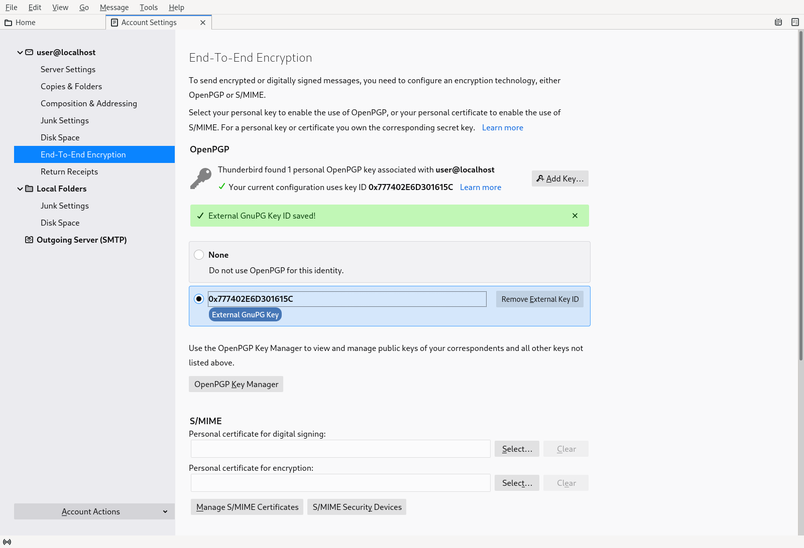
This key ID will be used to digitally sign or send an encrypted message with your account. For this to work, Thunderbird needs a copy of your public key. At this time, Thunderbird doesn’t fetch the public key from /usr/bin/qubes-gpg-client-wrapper, you must manually import it. Export the key as follow (assuming the key ID would be 777402E6D301615C):
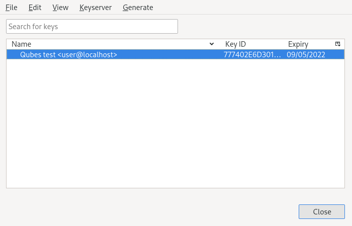
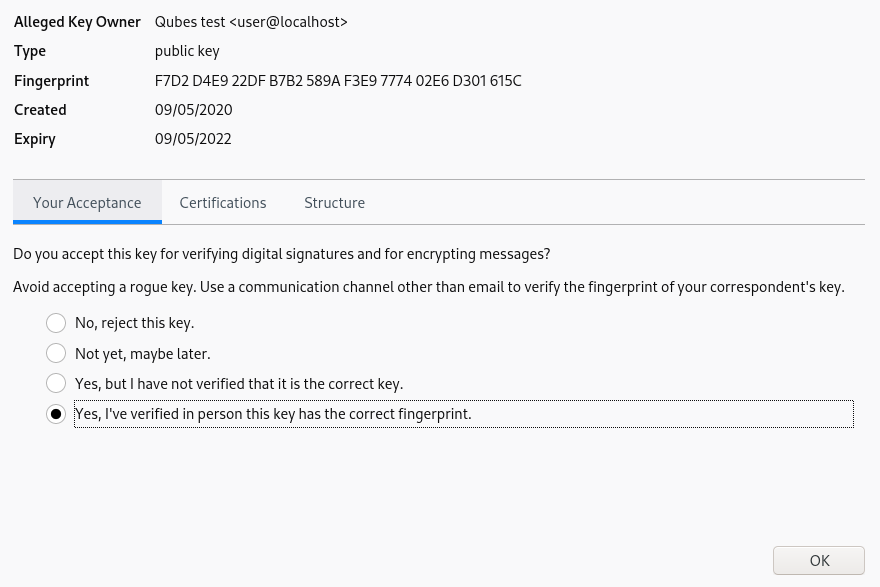
Use Thunderbird’s Tools menu to open OpenPGP Key Management. In that window, use the File menu to access the Import Public Key(s) From File command. Open the file with your public key. After the import was successful, right click on the imported key in the list and select Key Properties. You must mark your own key as Yes, I’ve verified in person this key has the correct fingerprint.
Once this is done, you should be able to send an encrypted and signed email by selecting Require Encryption or Digitally Sign This Message in the compose menu Options or Security toolbar button. You can try it by sending an email to yourself.
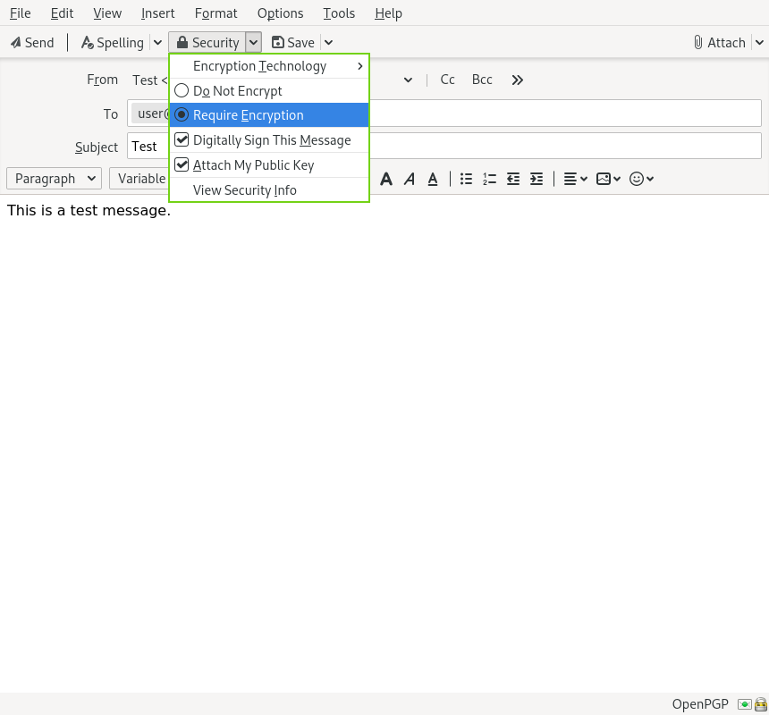
For more details about using smart cards/Split GPG with Thunderbird PGP feature, please see Thunderbird:OpenPGP:Smartcards from which the above documentation is inspired.
Older Thunderbird versions
For Thunderbird versions below 78, the traditional Enigmail + Split GPG setup is required. It is recommended to set up and use /usr/bin/qubes-gpg-client-wrapper, as discussed above, in Thunderbird through the Enigmail addon.
Warning: Before adding any account, configuring Enigmail with /usr/bin/qubes-gpg-client-wrapper is required. By default, Enigmail will generate a default GPG key in work-email associated with the newly created Thunderbird account. Generally, it corresponds to the email used in work-gpg associated to your private key. In consequence, a new, separate private key will be stored in work-email but it does not correspond to your private key in work-gpg. Comparing the fingerprint or expiration date will show that they are not the same private key. In order to prevent Enigmail using this default generated local key in work-email, you can safely remove it.
On a fresh Enigmail install, your need to change the default Enigmail Junior Mode. Go to Thunderbird preferences and then privacy tab. Select Force using S/MIME and Enigmail. Then, in the preferences of Enigmail, make it point to /usr/bin/qubes-gpg-client-wrapper instead of the standard GnuPG binary:
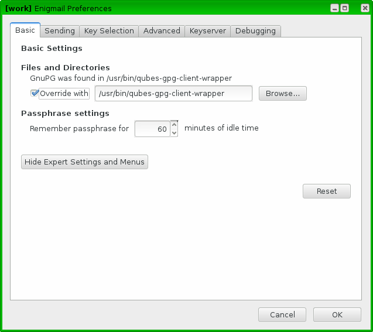
Using Keybase with Split GPG
Keybase, a security focused messaging and file-sharing app with GPG integration, can be configured to use Split GPG.
The Keybase service does not preserve/pass the QUBES_GPG_DOMAIN environment variable through to underlying GPG processes, so it must be configured to use /usr/bin/qubes-gpg-client-wrapper (as discussed above) rather than /usr/bin/qubes-gpg-client.
The following command will configure Keybase to use /usr/bin/qubes-gpg-client-wrapper instead of its built-in GPG client:
$ keybase config set gpg.command /usr/bin/qubes-gpg-client-wrapper
Now that Keybase is configured to use qubes-gpg-client-wrapper, you will be able to use keybase pgp select to choose a GPG key from your backend GPG app qube and link that key to your Keybase identity.
Using Git with Split GPG
Git can be configured to utilize Split GPG, something useful if you would like to contribute to the Qubes OS Project as every commit is required to be signed. The most basic ~/.gitconfig file enabling Split GPG looks something like this.
[user]
name = <YOUR_NAME>
email = <YOUR_EMAIL_ADDRESS>
signingKey = <YOUR_KEY_ID>
[gpg]
program = qubes-gpg-client-wrapper
Your key id is the public id of your signing key, which can be found by running qubes-gpg-client --list-keys. In this instance, the key id is E142F75A6B1B610E0E8F874FB45589245791CACB.
[user@work-email ~]$ qubes-gpg-client --list-keys
/home/user/.gnupg/pubring.kbx
-----------------------------
pub ed25519 2022-08-16 [C]
E142F75A6B1B610E0E8F874FB45589245791CACB
uid [ultimate] Qubes User <user@example.com>
sub ed25519 2022-08-16 [S]
sub cv25519 2022-08-16 [E]
sub ed25519 2022-08-16 [A]
To sign commits, you now add the “-S” flag to your commit command, which should prompt for Split GPG usage. If you would like to automatically sign all commits, you can add the following snippet to ~/.gitconfig.
[commit]
gpgSign = true
Lastly, if you would like to add aliases to sign and verify tags using the conventions the Qubes OS Project recommends, refer to the code signing documentation.
Importing public keys
Use qubes-gpg-import-key in the client app qube to import the key into the GPG backend VM.
[user@work-email ~]$ export QUBES_GPG_DOMAIN=work-gpg
[user@work-email ~]$ qubes-gpg-import-key ~/Downloads/marmarek.asc
A safe, unspoofable user consent dialog box is displayed.
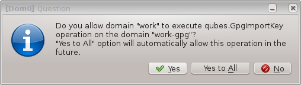
Selecting “Yes to All” will add a line in the corresponding RPC Policy file.
Advanced: Using Split GPG with Subkeys
Users with particularly high security requirements may wish to use Split GPG with subkeys. However, this setup comes at a significant cost: It will be impossible to sign other people’s keys with the master secret key without breaking this security model. Nonetheless, if signing others’ keys is not required, then Split GPG with subkeys offers unparalleled security for one’s master secret key.
Setup Description
In this example, the following keys are stored in the following locations (see below for definitions of these terms):
PGP Key(s) |
VM Name |
|---|---|
|
|
|
|
|
|
sec(master secret key)Depending on your needs, you may wish to create this as a certify-only (C) key, i.e., a key which is capable only of signing (a.k.a., “certifying”) other keys. This key may be created without an expiration date. This is for two reasons. First, the master secret key is never to leave the
vaultVM, so it is extremely unlikely ever to be obtained by an adversary (see below). Second, an adversary who does manage to obtain the master secret key either possesses the passphrase to unlock the key (if one is used) or does not. An adversary who does possess the passphrase can simply use it to legally extend the expiration date of the key (or remove it entirely). An adversary who does not possess the passphrase cannot use the key at all. In either case, an expiration date provides no additional benefit.By the same token, however, having a passphrase on the key is of little value. An adversary who is capable of stealing the key from your
vaultwould almost certainly also be capable of stealing the passphrase as you enter it. An adversary who obtains the passphrase can then use it in order to change or remove the passphrase from the key. Therefore, using a passphrase at all should be considered optional. It is, however, recommended that a revocation certificate be created and safely stored in multiple locations so that the master keypair can be revoked in the (exceedingly unlikely) event that it is ever compromised.
ssb(secret subkey)Depending on your needs, you may wish to create two different subkeys: one for signing (S) and one for encryption (E). You may also wish to give these subkeys reasonable expiration dates (e.g., one year). Once these keys expire, it is up to you whether to renew these keys by extending the expiration dates or to create new subkeys when the existing set expires.
On the one hand, an adversary who obtains any existing encryption subkey (for example) will be able to use it in order to decrypt all emails (for example) which were encrypted to that subkey. If the same subkey were to continue to be used–and its expiration date continually extended–only that one key would need to be stolen (e.g., as a result of the
work-gpgVM being compromised; see below) in order to decrypt all of the user’s emails. If, on the other hand, each encryption subkey is used for at most approximately one year, then an adversary who obtains the secret subkey will be capable of decrypting at most approximately one year’s worth of emails.On the other hand, creating a new signing subkey each year without renewing (i.e., extending the expiration dates of) existing signing subkeys would mean that all of your old signatures would eventually read as “EXPIRED” whenever someone attempts to verify them. This can be problematic, since there is no consensus on how expired signatures should be handled. Generally, digital signatures are intended to last forever, so this is a strong reason against regularly retiring one’s signing subkeys.
pub(public key)This is the complement of the master secret key. It can be uploaded to keyservers (or otherwise publicly distributed) and may be signed by others.
vaultwork-gpgwork-emailThis VM has access to the mail server. It accesses the
work-gpgVM via the Split GPG protocol. The public key may be stored in this VM so that it can be attached to emails and for other such purposes.
Security Benefits
In the standard Split GPG setup, there are at least two ways in which the work-gpg VM might be compromised. First, an attacker who is capable of exploiting a hypothetical bug in work-email’s MUA could gain control of the work-email VM and send a malformed request which exploits a hypothetical bug in the GPG backend (running in the work-gpg VM), giving the attacker control of the work-gpg VM. Second, a malicious public key file which is imported into the work-gpg VM might exploit a hypothetical bug in the GPG backend which is running there, again giving the attacker control of the work-gpg VM. In either case, such an attacker might then be able to leak both the master secret key and its passphrase (if any is used, it would regularly be input in the work-gpg VM and therefore easily obtained by an attacker who controls this VM) back to the work-email VM or to another VM (e.g., the netvm, which is always untrusted by default) via the Split GPG protocol or other covert channels. Once the master secret key is in the work-email VM, the attacker could simply email it to himself (or to the world).
In the alternative setup described in this section (i.e., the subkey setup), even an attacker who manages to gain access to the work-gpg VM will not be able to obtain the user’s master secret key since it is simply not there. Rather, the master secret key remains in the vault VM, which is extremely unlikely to be compromised, since nothing is ever copied or transferred into it. [1] The attacker might nonetheless be able to leak the secret subkeys from the work-gpg VM in the manner described above, but even if this is successful, the secure master secret key can simply be used to revoke the compromised subkeys and to issue new subkeys in their place. (This is significantly less devastating than having to create a new master keypair.)
Subkey Tutorials and Discussions
(Note: Although the tutorials below were not written with Qubes Split GPG in mind, they can be adapted with a few commonsense adjustments. As always, exercise caution and use your good judgment.)
Current limitations
Current implementation requires importing of public keys to the vault domain. This opens up an avenue to attack the gpg running in the backend domain via a hypothetical bug in public key importing code. See ticket #474 for more details and plans how to get around this problem, as well as the section on Advanced: Using Split GPG with Subkeys.
It doesn’t solve the problem of allowing the user to know what is to be signed before the operation gets approved. Perhaps the GPG backend domain could start a disposable and have the to-be-signed document displayed there? To Be Determined.
The Split GPG client will fail to sign or encrypt if the private key in the GnuPG backend is protected by a passphrase. It will give an
Inappropriate ioctl for deviceerror. Do not set passphrases for the private keys in the GPG backend domain. Doing so won’t provide any extra security anyway, as explained in the introduction and in Advanced: Using Split GPG with Subkeys. If you are generating a new key pair, or if you have a private key that already has a passphrase, you can usegpg2 --edit-key <key_id>thenpasswdto set an empty passphrase. Note thatpinentrymight show an error when you try to set an empty passphrase, but it will still make the change. (See this StackExchange answer for more information.) Note: The error shows only if you do not have graphical pinentry installed.